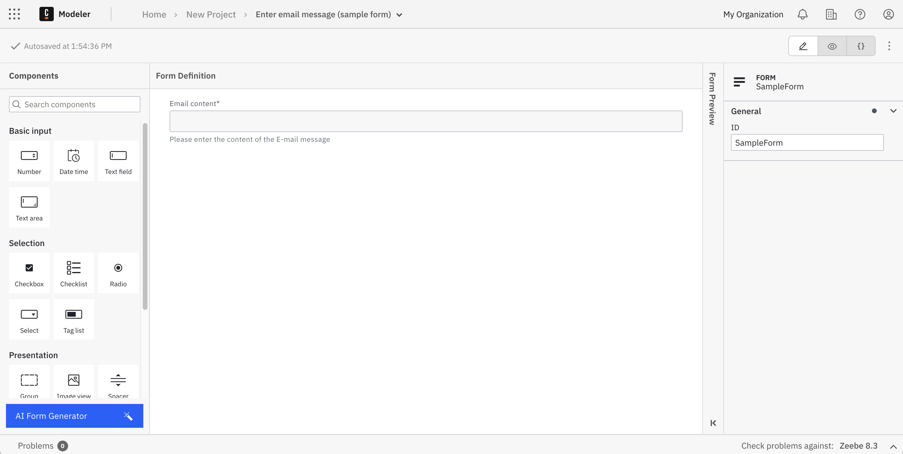
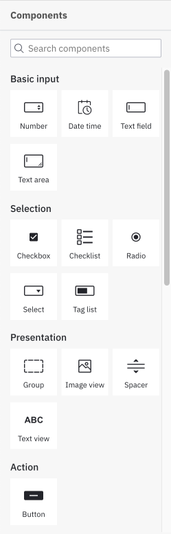
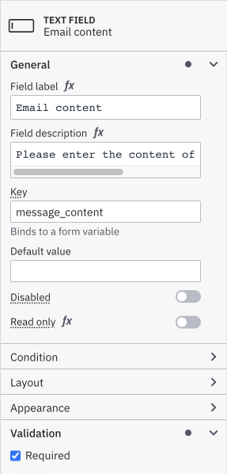

Build forms with Modeler
Overview
The Camunda Forms feature allows you to easily design and configure forms. Once configured, they can be connected to a user task or start event to implement a task form in your application.
After deploying a diagram with a linked form, Tasklist imports this form schema and uses it to render the form on every task assigned to it.
Quickstart
Create new form
To start building a form, log in to your Camunda 8 account or open Desktop Modeler and take the following steps:
- Navigate to Web Modeler or alternatively open the File menu in Desktop Modeler.
- Open any project from your Web Modeler home view.
- Click Create new and choose Form.
Build your form
Now you can start to build your form by dragging elements from the palette to the canvas, or by using the AI Form Generator at the bottom of the palette. For the purpose of this guide, we'll build a form from scratch.
Right after creating your form, you can name it by replacing the New Form text with the name of your choice. In this example, we'll build a form to help with a task in obtaining an email message.

Add your desired elements from the palette on the left side by dragging and dropping them onto the canvas.

Within Forms, we have the option to add text fields, numerical values, checkboxes, radio elements, selection menus, text components, and buttons.
In the properties panel on the right side of the page, view and edit attributes that apply to the selected form element. For example, apply a minimum or maximum length to a text field, or require a minimum or maximum value within a number element. In this case, we have labeled the field, described the field, and required an input for our email message.

Refer to the camunda forms reference to explore all form elements and configuration options in detail.
Save your form
To save your form in Camunda 8, you don't have to do anything. Web Modeler will autosave every change you make.
Link your form to a BPMN diagram
Next, let's implement a task form into a diagram. In tandem, we can link your form to a user task or start event.
Navigate to Modeler and open any project from your Web Modeler home view.
Take the following steps:
- Select the diagram where you'd like to apply your form.
- Select the user task requiring the help of a form.
- On the right side of the selected user task, select the blue overlay with the link icon to open the navigation menu.
- Navigate to the form you want to link and click the blue Link button.
- When a user task has a linked form, the blue overlay will always stay visible on the right side of the task.
When using Camunda Forms, any submit button present in the form schema is hidden so we can control when a user can complete a task.
With Camunda 8.4, we improved the way you can link forms to BPMN diagrams in Web Modeler:
- Diagrams will always have the latest form updates.
- No need to manually re-link forms or use a JSON configuration.
- Forms will be automatically deployed with the diagram.
See the form linking reference for more details.
Deploy your diagram and start an instance
To execute your completed process diagram, click the blue Deploy button. Linked forms will automatically be deployed along with the diagram. You can now start a new process instance to initiate your process diagram. Click the blue Run button. You can now monitor your instances in Operate.
Linked Camunda Forms will automatically be deployed along with the diagram. As linked forms are always resolved to their latest version, make sure you don't accidentally deploy a diagram.
When deploying to a Camunda 8 cluster with a version lower than 8.4, forms linked to user tasks or none start events will be automatically embedded into the user task to guarantee backwards compatibility. Read more about the different ways to reference Camunda Forms in the user task forms reference.
To complete a user task, navigate to Tasklist.